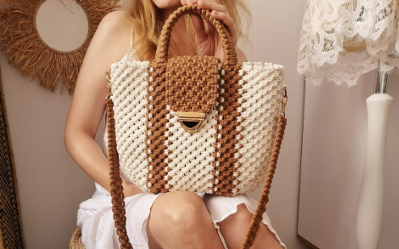
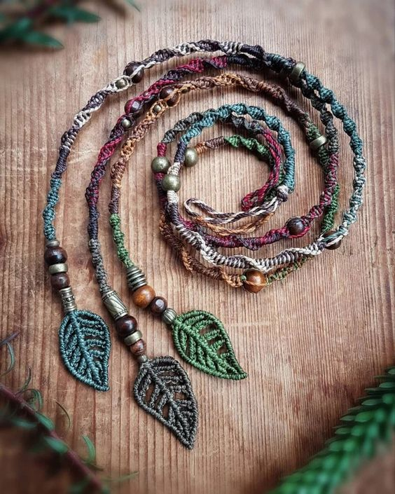
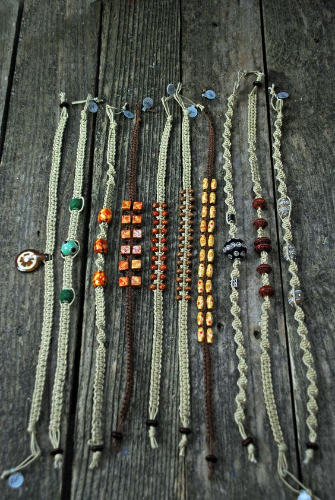
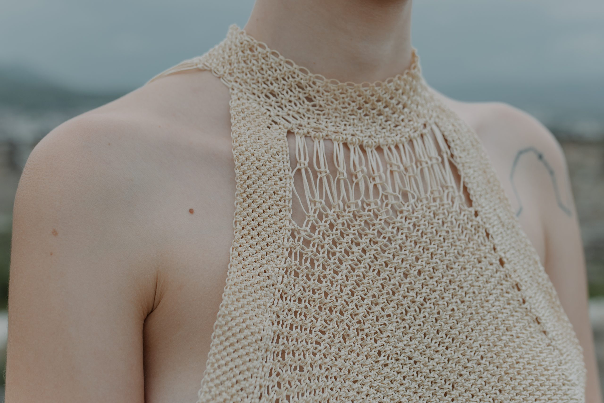

Arte con nudos
Explorando la Belleza y la Creatividad de los Nudos
El macramé, una antigua técnica de tejido que utiliza nudos decorativos, ha experimentado un resurgimiento en popularidad en los últimos años. Su versatilidad y encanto han cautivado a diseñadores, artistas y entusiastas de la artesanía en todo el mundo. En este extenso artículo, exploraremos a fondo la inspiración y las tendencias que están dando forma al emocionante y vibrante mundo del macramé en la actualidad. El macramé, con su origen ancestral en diversas culturas, ha sido una fuente constante de inspiración para los amantes del arte y la artesanía. Cada nudo y cada entrelazado cuentan una historia y ofrecen una estética única. Desde patrones intrincados hasta diseños minimalistas, el macramé ofrece infinitas posibilidades creativas para aquellos que se sumergen en su mundo fascinante.  Una de las tendencias actuales más emocionantes en el mundo del macramé es la fusión de diferentes materiales. Los diseñadores están explorando la combinación de elementos naturales, como madera, conchas marinas, plumas e incluso piedras preciosas, para agregar un toque orgánico y bohemio a las creaciones de macramé. Esta fusión de texturas y materiales crea piezas únicas y originales que no solo son visualmente atractivas, sino que también evocan una conexión con la naturaleza. Otra tendencia en auge en el macramé contemporáneo es el juego con el color. Los diseñadores están experimentando con una amplia gama de tonalidades, desde colores vibrantes y audaces hasta combinaciones sutiles y elegantes. El uso del color en el macramé no solo agrega personalidad y estilo a las piezas, sino que también evoca emociones y estados de ánimo específicos.  Desde los clásicos neutros que transmiten serenidad hasta los tonos pastel que inspiran calma y los colores del arcoíris que irradian alegría, el uso inteligente del color en el macramé puede transformar una obra en algo verdaderamente especial. La exploración de nuevas formas y técnicas también está en constante evolución en el mundo del macramé. Los diseñadores audaces y experimentales están llevando esta antigua técnica a nuevos horizontes, creando piezas tridimensionales y esculturales que desafían los límites de lo tradicional. La incorporación de elementos arquitectónicos, como estructuras geométricas y formas abstractas, permite a los artistas crear obras de macramé que se convierten en verdaderas piezas de arte. Estas creaciones no solo son estéticamente impresionantes, sino que también ofrecen una experiencia táctil y sensorial única.  Además de la influencia de otros artistas y diseñadores, la inspiración en el macramé también proviene de la naturaleza, la arquitectura y las culturas de todo el mundo. Los patrones y motivos tradicionales, como los provenientes de la cultura indígena o los diseños geométricos de la arquitectura islámica, se reinterpretan en el macramé contemporáneo, creando una fusión única entre lo antiguo y lo moderno. La combinación de elementos culturales y estéticos en el macramé permite a los artistas contar historias y expresar su conexión con el mundo que les rodea.  En conclusión, la inspiración y las tendencias en el macramé son un reflejo del dinamismo y la creatividad que caracterizan a este arte ancestral. Ya sea que te sientas atraído por los diseños tradicionales que han resistido el paso del tiempo o por las innovaciones contemporáneas que desafían los límites, el mundo del macramé ofrece infinitas posibilidades para dejar volar tu imaginación y crear piezas únicas que reflejen tu estilo y personalidad. ¡Sumérgete en el maravilloso mundo del macramé, explora sus nudos creativos y déjate inspirar por su belleza y encanto!